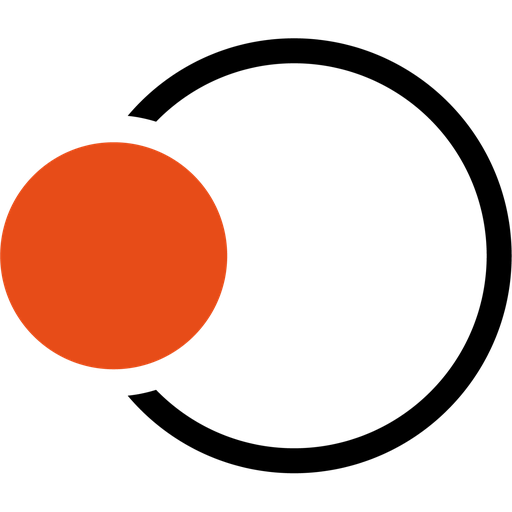
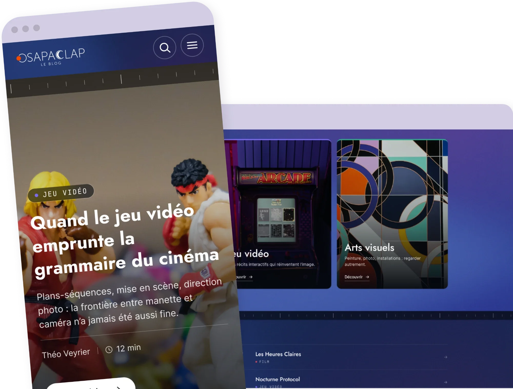
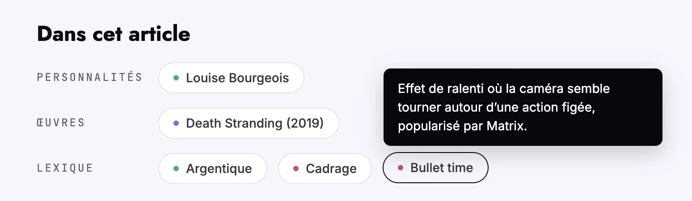
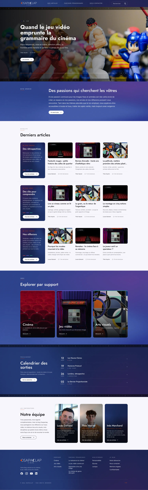
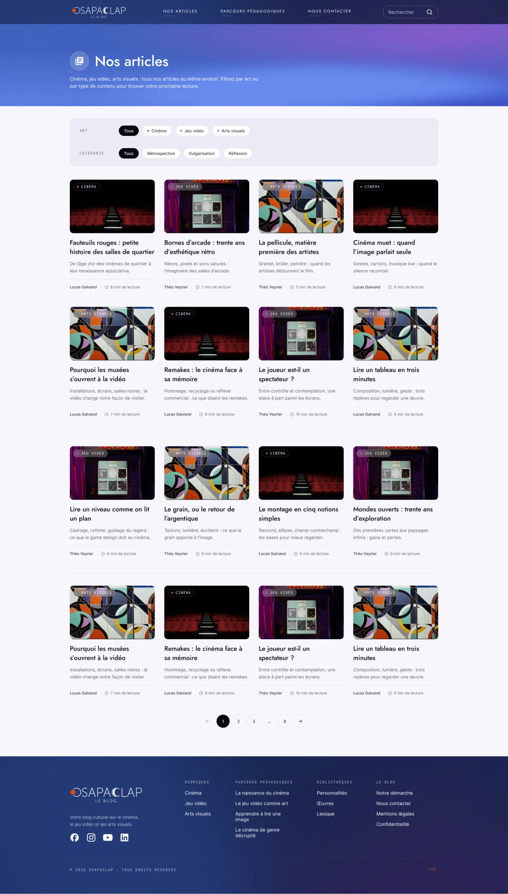
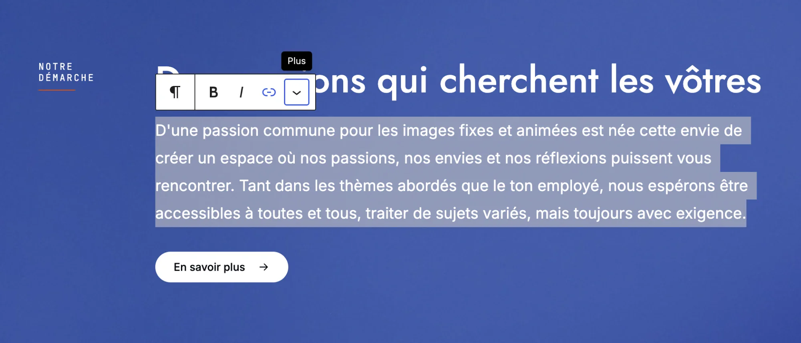
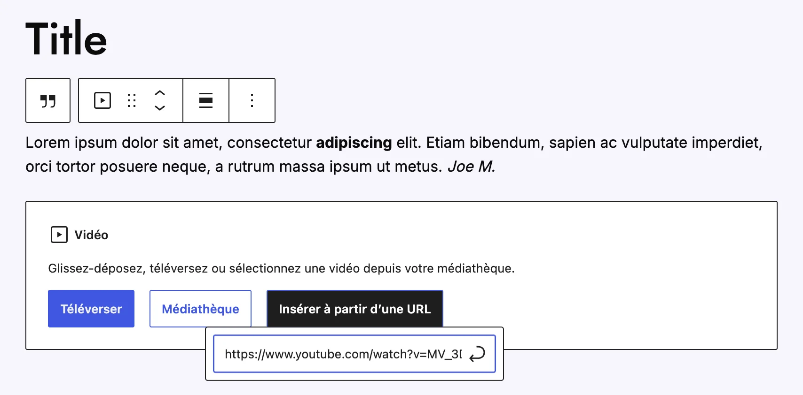

Cinéma
Fauteuils rouges : petite histoire des salles de quartier
De l’âge d’or des cinémas de quartier à leur renaissance associative.

Association · Website
Osapaclap is an association that writes about cinema, video games and visual arts. They asked me for a WordPress website to publish their work and give it a wider audience.
At first it sounded like a blog. Once we listed everything they wanted to publish, it became much more: articles, learning paths ending with a quiz, a library of personalities, works and film vocabulary, an events calendar and a team page. Each of these needed its own template, and all of them had to link to each other.
Having designed many websites with a complex architecture, I developed a seven-step method, from the first meeting to the day the site goes live. This project illustrates it perfectly, and each section below covers one step.
Content and needs, mapped first
Identity validated on the homepage
Components and key templates
Content types, fields and rules
WordPress theme and plugins
Back office and editor guide
DNS, domain and go-live
Before opening Figma, I met the team to list everything the site had to hold and who it was for. That list showed how connected the content was. An article about a film mentions a director, a work and a few technical terms, and each of those deserves its own page. Here is the map we agreed on:
Cinema, video games and visual arts, sorted by theme. Every other type links back to them.
Articles read in order, with a quiz at the end
Directors, artists and game designers
Films, games and artworks
Technical terms explained in plain words
Screenings, talks and workshops
The authors and their articles
On the live site
On the front, this map becomes links. At the end of each article, an "In this article" block lists the personalities, works and glossary terms it mentions, and each one opens its own page. These interconnections keep readers moving from page to page, and they help SEO: search engines follow the internal links to understand how the content fits together.

Hovering a term shows its definition without leaving the article.
I designed the homepage before any other page. It is where the identity has to work hardest, and it gave the association something concrete to react to. Once they validated it, every other template followed the same rules.
The homepage, as validated by the association

Scroll inside the frame: latest articles, the three media, upcoming events and the team, all on one page.
With the identity agreed, I turned it into a design system in Figma: navigation, buttons, filter chips, a card for each content type, learning path rows, header and footer. I then used it to design the most important templates of the site.
De l’âge d’or des cinémas de quartier à leur renaissance associative.
Retrouvez ici des articles où l'on remonte le fil du temps. On revient sans distinction ce qui compose le jeu vidéo, le cinéma et les arts visuels.
Figure de la Nouvelle Vague, du documentaire et de la photographie.
The main components of the Figma library, rebuilt here in code. Try the filter chips.
Templates show what a page looks like. Before writing any code, I translated them into specifications: which content types exist, which fields each one needs, how they link to each other and what editors are allowed to change. The association validated this document, so development started on solid ground.
The pages validated in Figma
Articles, learning paths, library, events
Author, category, theme, linked personalities and works
Required fields and allowed blocks
Approved by the association before development
I developed a fully custom WordPress theme on the native block editor, with a template for each content type. The site's own features live in a separate plugin. For everything else, I picked free, widely used plugins: an events calendar, custom fields, local avatars and page ordering. The association has no licence to renew each year.
Every template is built from the Figma design, with no off-the-shelf theme to work around.
Only free plugins with a large user base, so the site keeps running without yearly fees.
Built on the editor WordPress ships with, so any WordPress developer can take over the project later.
The templates, one for each content type

Article list, filtered by medium and theme.
My goal was that the team would never need me to publish. I shaped the WordPress back office around what the editors do every day, then trained them to use it.
Editors change the content of a page, never its structure, so the design stays intact.
An article can't go live without a title, an author, a main image, an excerpt, a category and a theme.
Editors only see the blocks the design supports, which keeps every article consistent.
I wrote an admin guide in French and ran a training session with the editors before launch.
What editing looks like


I also took care of putting the site online: checking everything before the switch, setting up the DNS, then connecting the domain. The association received a finished website, ready to publish on.
Pages, links and forms tested before the switch
Records pointed to the server
The switch to the new site, the last step before going live
The team publishes from day one
Osapaclap now has a website that looks like the work it publishes. Readers move from an article to a director, a film or a technical term without losing the thread. The site is pleasant to browse, and just as pleasant to run: the team publishes on its own, and every page stays on-brand whoever writes it.
Here is my 7-step method, which I adapt to the needs of each project. Tell me about yours.